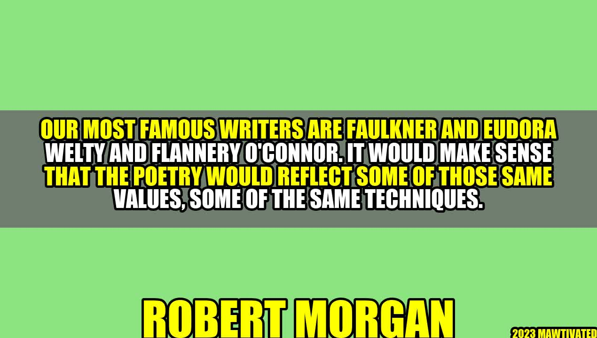

Unleashing the Beauty of Southern Poetry

When I was a teenager, I stumbled upon the works of Robert Morgan, a writer whose words impacted my life in ways I never imagined. Growing up in the South, I was always fascinated with the beauty of its language, its folk songs, and its stories. But it was through Morgan's work that I fully realized the power and the magnificence of Southern poetry.
The Influence of Faulkner, Welty, and O'Connor
Our most famous writers are Faulkner and Eudora Welty and Flannery O'Connor. It would make sense that the poetry would reflect some of those same values, some of the same techniques.
- Morgan's poetry, for instance, often delves into the complexities of Southern history, culture, and identity with an unparalleled level of emotional depth and intellectual rigor.
- His use of vivid imagery, rich symbolism, and musicality of language echoes the works of Faulkner, Welty, and O'Connor.
- Moreover, Morgan's poetry possesses an admirable sense of emotional honesty and authenticity that reflects the Southern value of sincerity and directness.
"I am moved by things that are imperfect and unfinished and incomplete. And yet they are also promising in a way..." - Robert Morgan
Examples of Southern Poetry
The beauty of Southern poetry lies not only in its structure, but also in its themes and subjects. Here are a few examples:
- "Delta Blues" - Written by Yusef Komunyakaa, this poem captures the essence of the blues, a genre of music that originated in the Mississippi Delta. With its rhythms, harmonies, and melodies, the blues tells the stories of love, loss, and struggle that define the African American experience in the South.
- "All Watched Over by Machines of Loving Grace" - Richard Brautigan's poem is a playful and imaginative exploration of technology in the modern world. But it also reveals the darker side of progress and the potential loss of humanity in a society dominated by machines.
- "Crossing the Bar" - Alfred Tennyson's poem is a meditation on death and the mysteries of the afterlife. Its use of metaphors and symbols reflects the deeply spiritual nature of the South and its belief in the power of faith and redemption.
Conclusion
In summary, Southern poetry is an art form that reflects the beauty and complexity of Southern culture, history, and identity. Inspired by the works of Faulkner, Welty, and O'Connor, Southern poets employ vivid imagery, rich symbolism, and musicality of language to convey their messages. Moreover, Southern poetry possesses an admirable sense of emotional honesty and authenticity that reflect Southern values of sincerity and directness.
To fully appreciate the beauty of Southern poetry, take some time to read the works of Robert Morgan, Yusef Komunyakaa, Richard Brautigan, Alfred Tennyson, and other Southern poets. You'll be amazed at the power and the magnificence of their words.
Hashtags
- #SouthernPoetry
- #RobertMorgan
- #Faulkner
- #EudoraWelty
- #FlanneryOConnor
SEO Keywords
- Southern poetry
- Robert Morgan
- Faulkner
- Eudora Welty
- Flannery O'Connor
Article Category
Literature
Curated by Team Akash.Mittal.Blog
Curated by Team Akash.Mittal.Blog
Share on Twitter Share on LinkedIn